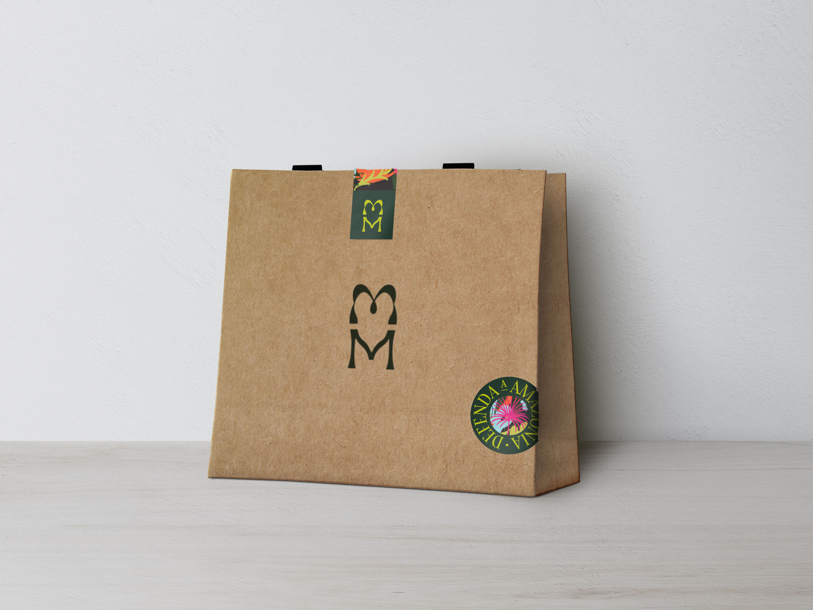
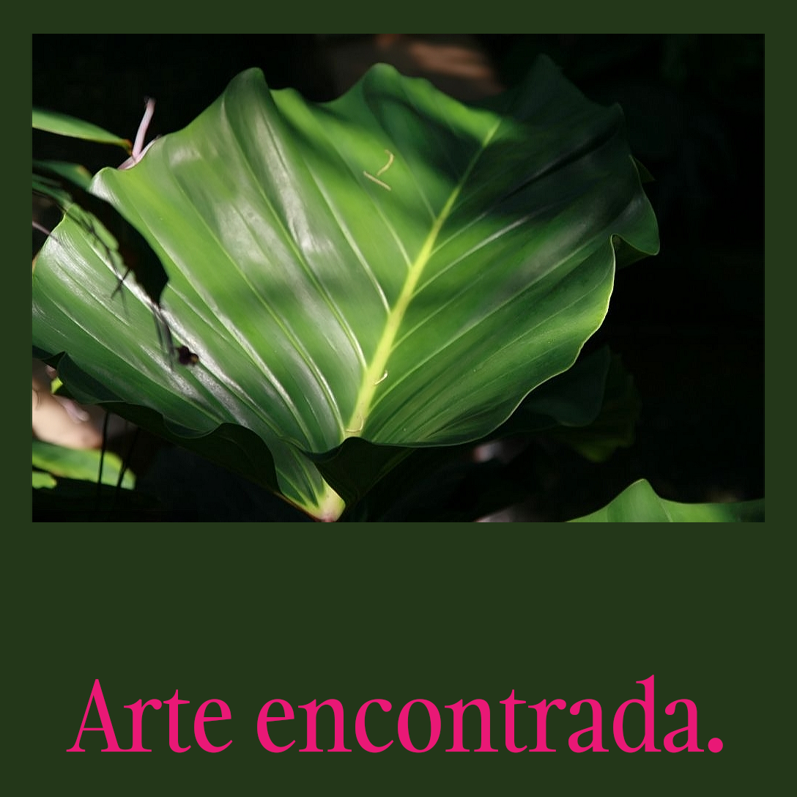
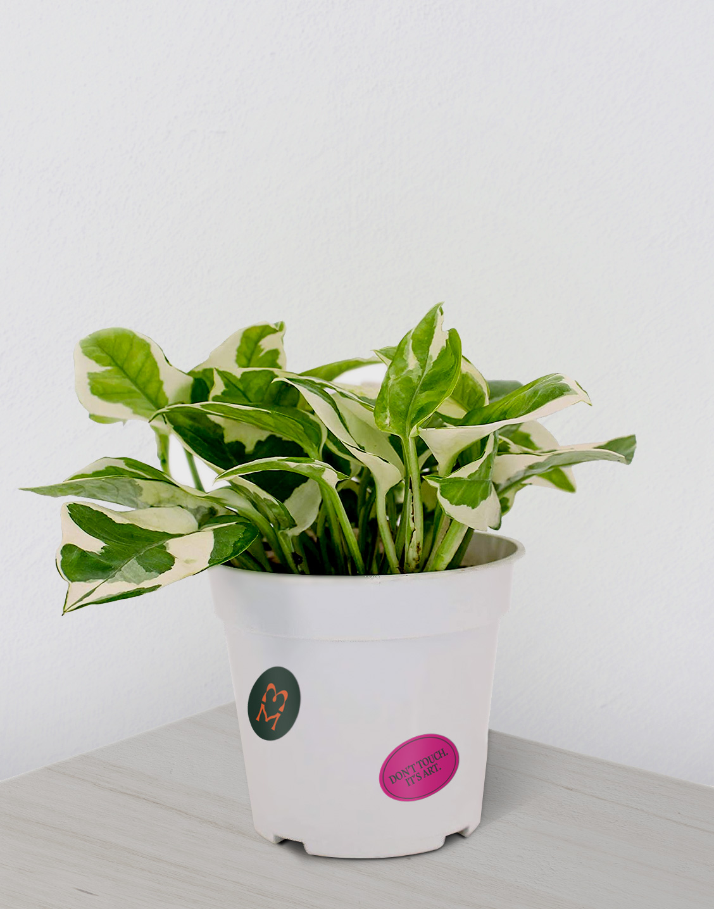
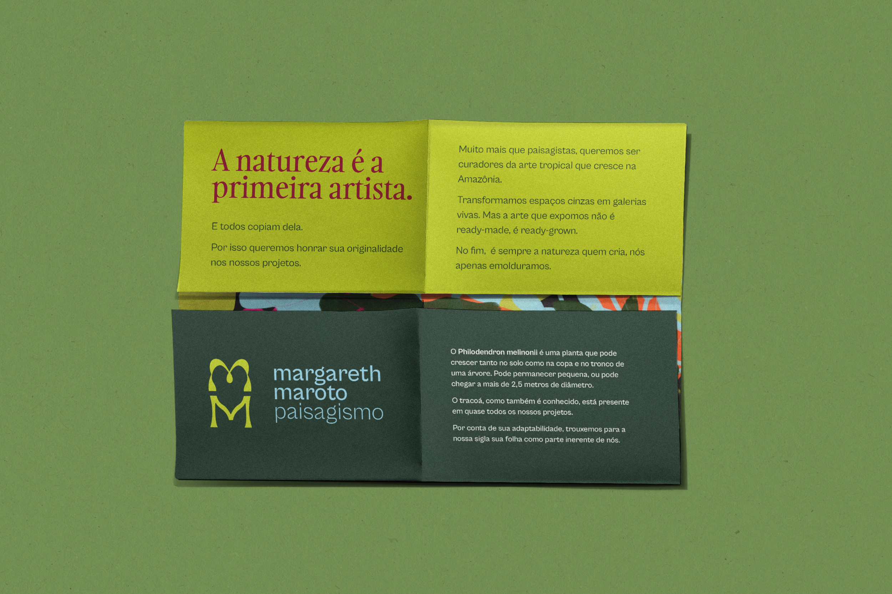
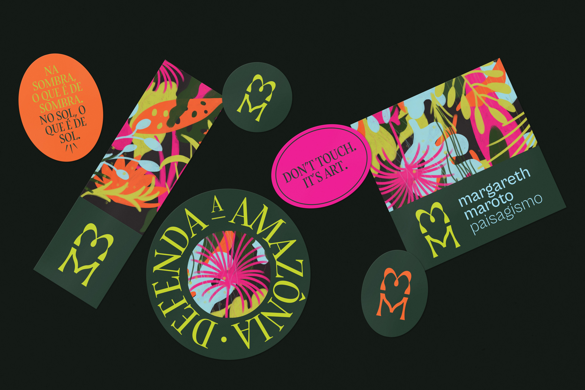

With more than 30 years of business, Margareth Maroto's office sought to revitalize its identity to move away from the concept of most architecture offices and show the world who it really is: not minimalist, not cold, not distant.
The objective was to convey a welcoming feeling through a visual language that referred to contemporary art. Something maximalist, exaggerated, leafy.
When trying to combine art with landscaping, we realize that nature itself is an artist and landscapers are mere curators of the art found within it.
The logo was designed, then, not as a symbol for a landscaping office, but for an art gallery.
The monogram reveals on its counterform the leaf of Philodendron melinonii, a plant that, due to its adaptability and resilience, has accompanied the office since the beginning and speaks volumes about its history and the way they work.
PT / EN




